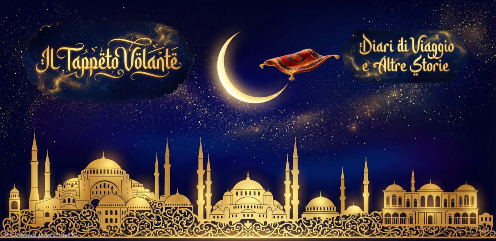
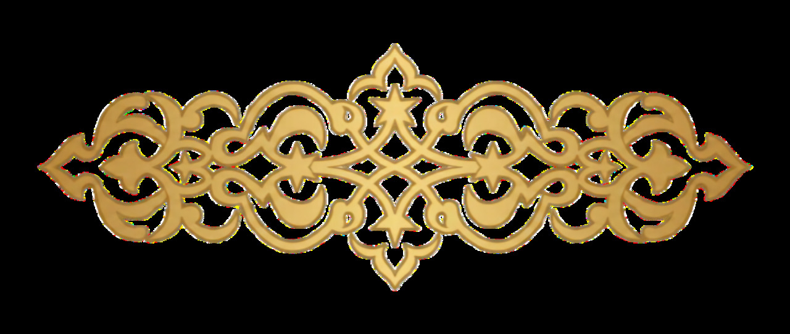
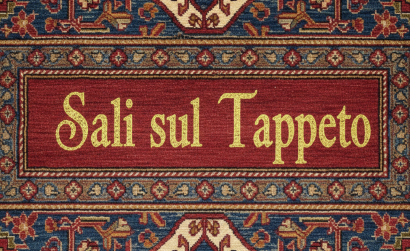
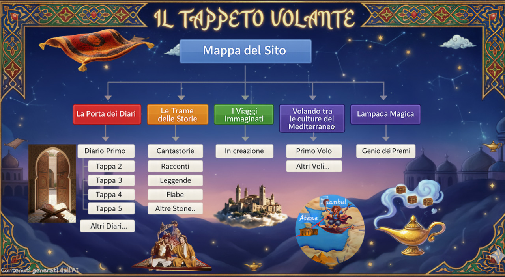

Un diario che attraversa città reali e immaginate, storie antiche e voci lontane, seguendo il filo invisibile che unisce Oriente e Mediterraneo.
Qui il viaggio non è solo movimento nello spazio, ma uno sguardo che osserva, ascolta e ricompone.
Non c’è un percorso obbligato. C’è solo un invito: salire sul tappeto e lasciarsi portare.

Il Tappeto Volante è un progetto culturale indipendente e autofinanziato. Con diari, immagini e racconti esploriamo le storie e i legami tra le sponde del Mediterraneo meridionale.
Il tuo sostegno ci aiuta a continuare la ricerca e a dare vita a nuove storie.
Supportaci